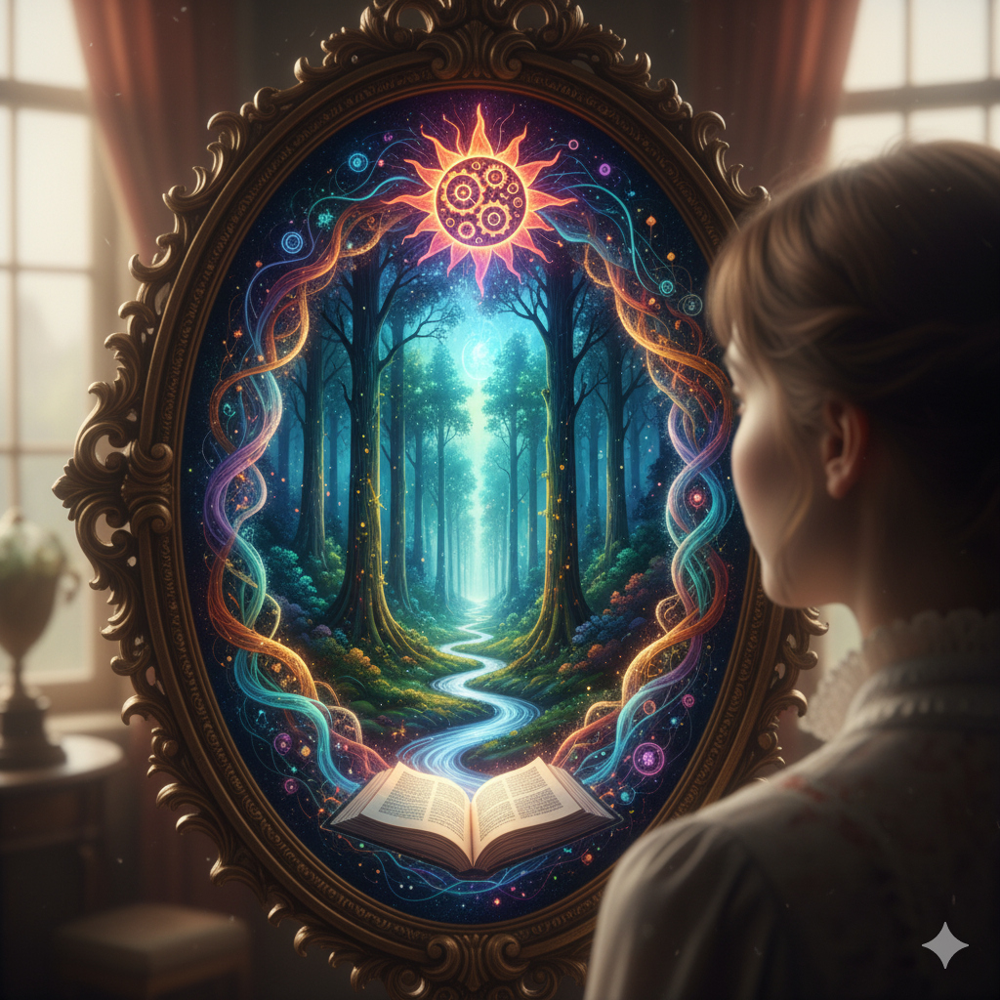
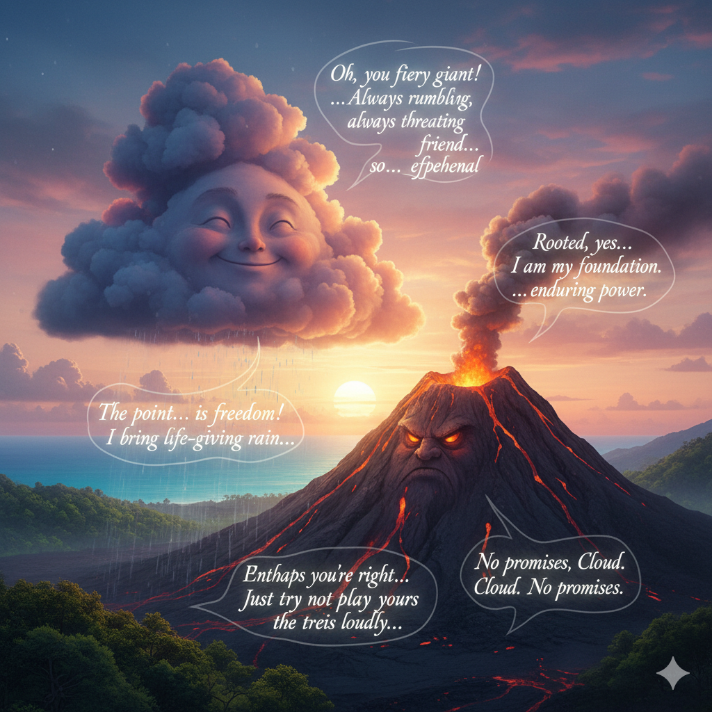
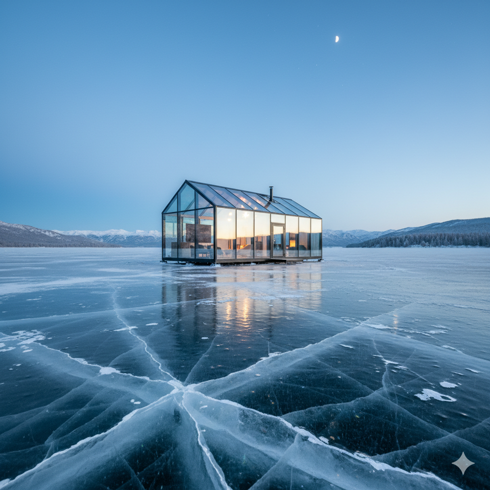
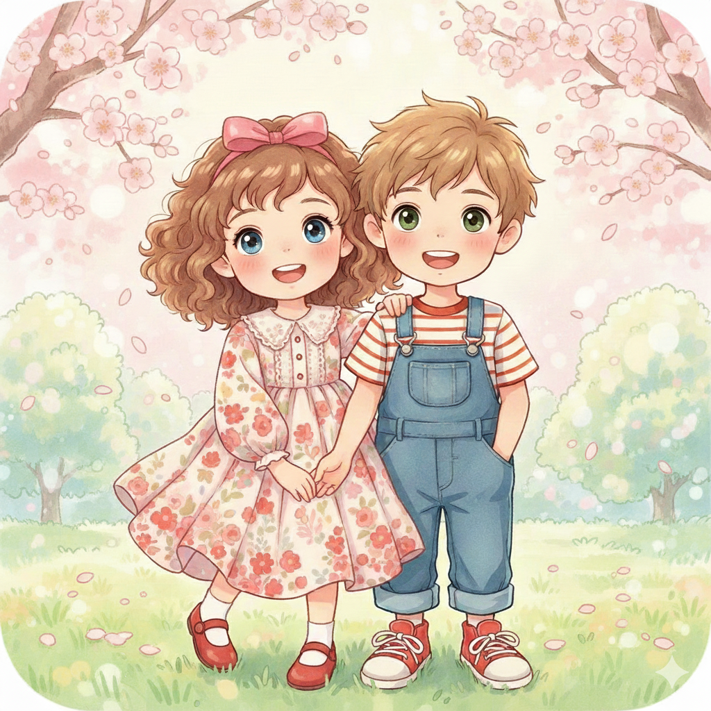
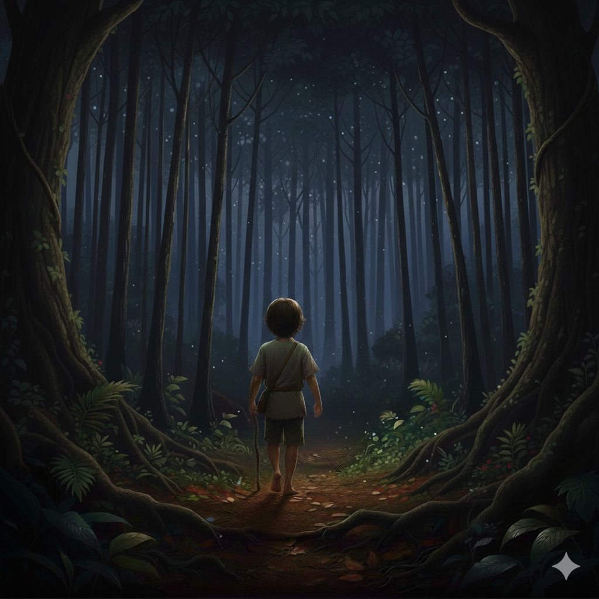
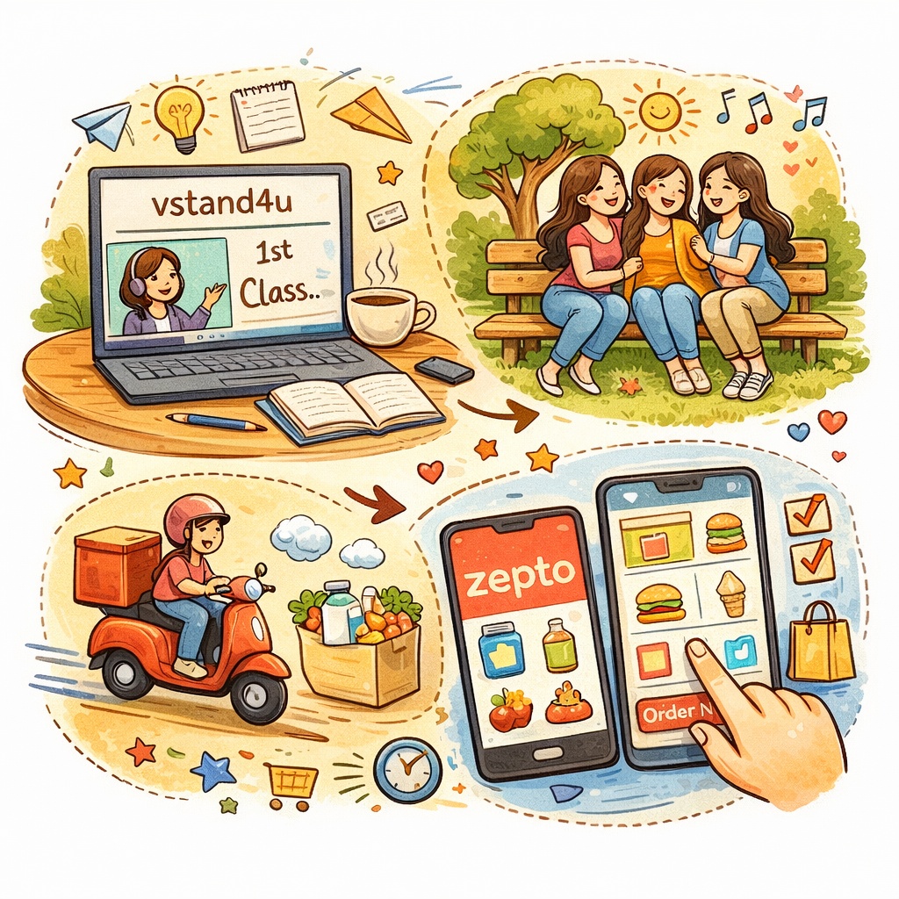
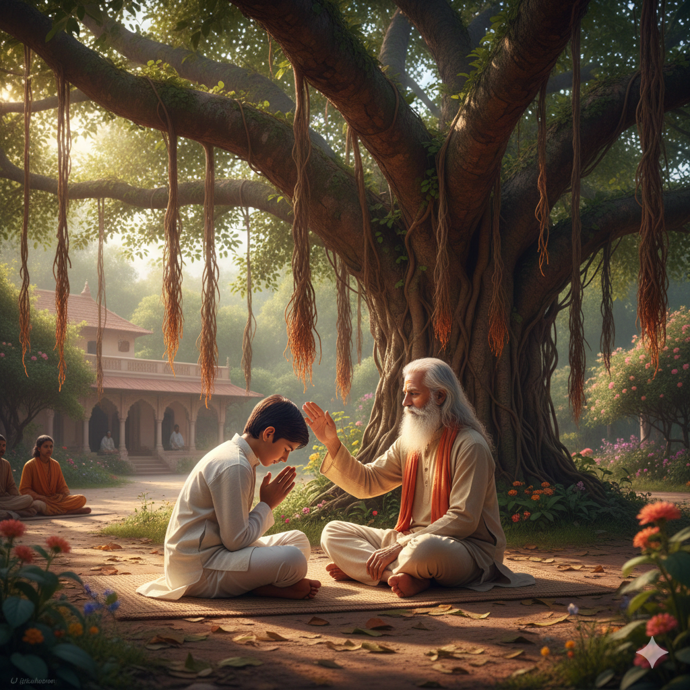

Transforming ideas into engaging visuals through AI-powered creativity, prompt engineering, and digital content creation.
I am an Engineering student passionate about Artificial Intelligence, Prompt Engineering, and Visual Content Creation.
I enjoy transforming ideas and user requirements into engaging AI-generated visuals, website banners, social media creatives, and digital design concepts.
Through effective prompt engineering and AI tools, I create practical and visually appealing solutions while continuously exploring new technologies and creative workflows.
I regularly use AI for content creation, image generation, reel ideation, marketing creatives, and managing content for public-facing digital platforms.
AI Image Generation • Prompt Engineering • Social Media Content Creation • Visual Design Concepts • Website Banner Design • Creative Content Ideation • Canva-Based Design Enhancement • AI-Assisted Marketing Creatives
```
Requirement: Create a magical fantasy scene that represents imagination, storytelling, and the journey into a fictional world.
Prompt: Create a cinematic fantasy illustration of a young girl looking into an enchanted mirror that reveals a magical forest. Include glowing energy streams, mystical symbols, a storybook, vibrant colors, magical lighting, intricate frame details, and a dreamlike atmosphere.
Tools: ChatGPT, AI Image Generation
Skills: Prompt Engineering, Fantasy Art Creation, Visual Storytelling, Scene Composition, Creative Concept Design

Requirement: Create a creative visual narrative depicting a conversation between natural elements in a fantasy-inspired environment.
Prompt: Create a whimsical fantasy illustration featuring a smiling rain cloud and a fiery volcano engaged in a playful conversation. Include expressive facial features, speech bubbles, dramatic sunset lighting, vibrant colors, cinematic landscape, and storybook-style digital art.
Tools: ChatGPT, AI Image Generation
Skills: Prompt Engineering, Creative Storytelling, Character Design, Scene Composition, Visual Communication

Requirement: Create a modern architectural concept showcasing a minimalist glass house in a unique natural environment.
Prompt: Create a photorealistic architectural visualization of a modern glass cabin situated on a frozen lake. Include reflective ice textures, soft ambient lighting, snow-covered mountains, minimalist architecture, cinematic composition, and a calm winter atmosphere.
Tools: ChatGPT, AI Image Generation
Skills: Prompt Engineering, Architectural Visualization, Environment Design, Photorealistic Rendering, Creative Concept Development

Requirement: Create a cute and heartwarming illustration suitable for greeting cards, children's designs, and personalized creative projects.
Prompt: Create an adorable illustration of a smiling boy and girl holding hands in a cherry blossom garden. Use pastel colors, soft lighting, kawaii art style, floral details, expressive eyes, and a dreamy storybook aesthetic.
Tools: Google Gemini, AI Image Generation
Skills: Prompt Engineering, Character Illustration, Greeting Card Design, Visual Storytelling

Requirement: Create a magical and immersive fantasy scene suitable for storybooks, creative storytelling, and digital artwork.
Prompt: Create a cinematic fantasy illustration of a young child walking alone through an enchanted forest at night. Include glowing particles, towering trees, moonlit atmosphere, soft mystical lighting, detailed foliage, magical ambiance, and a storybook art style.
Tools: Google Gemini, AI Image Generation
Skills: Prompt Engineering, Fantasy Art Creation, Visual Storytelling, Scene Composition, Creative Content Generation
Requirement: Design a website banner for Veer Savarkar.
Prompt: Create a historical themed banner featuring Veer Savarkar without text, suitable for a website hero section.
Tools: ChatGPT, AI Image Generation
Requirement: Create an elegant and professional logo for a greeting card and customized gifting brand.
Prompt: Design a premium circular logo for a greeting studio with pastel colors, floral elements, an envelope with heart details, elegant typography, feminine aesthetics, minimal branding, and a soft beige background.
Tools: ChatGPT, AI Image Generation, Canva

Requirement: Create a visual illustration representing a student's daily journey, including online learning, social interactions, food delivery services, and digital convenience.
Prompt: Create a colorful hand-drawn style illustration showing a student's lifestyle journey. Include online classes on a laptop, friends socializing in a park, grocery and food delivery services, and mobile app-based ordering. Use vibrant colors, doodle-style elements, and a friendly storytelling composition.
Tools: ChatGPT, AI Image Generation
Skills: Prompt Engineering, Visual Storytelling, Creative Illustration Design, Content Visualization

Requirement: Create a meaningful illustration depicting the bond between a mentor and student in a peaceful spiritual setting.
Prompt: Create a realistic and cinematic illustration of a young student receiving blessings from a wise guru beneath a large banyan tree. Include warm sunlight, traditional Indian architecture, serene garden surroundings, spiritual atmosphere, detailed nature elements, and soft golden lighting.
Tools: ChatGPT, AI Image Generation
Skills: Prompt Engineering, Cultural Storytelling, Scene Composition, Visual Storytelling, Creative Content Generation
📧 Email: ruchitapethe2620@gmail.com
💼 LinkedIn: linkedin.com/in/ruchitapethe-6a8839272
💻 GitHub: github.com/ruchi20788